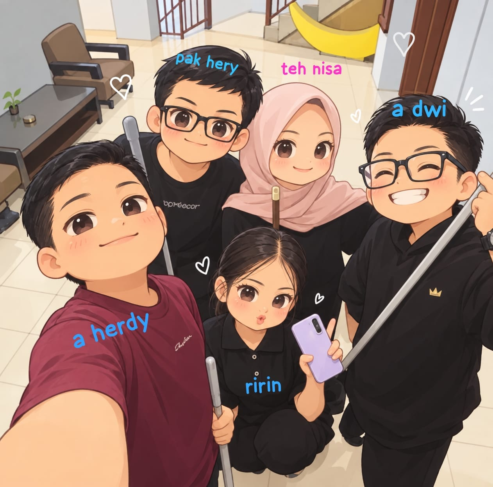

Untuk para pembimbingku💙
Selamat pagi/siang/sore/malem...
Hallo aa, teteh, bapa kalo kalian baca surat ini berati aku udah selesai PKL nya😁
Pengalaman PKL di hotel sanyrosa dengan teman teman se ruangan yang se asik kalian, se humoris kalian, se baik kalian, itu bakal jadi kenangan yang ga akan pernah aku lupain❤️🩹.
Teh nisa, A herdy, A dwi, Pa hery. kalian sehat selalu ya, sukses selalu dalam pekerjaannya. Ilmu yang kalian kasih ke aku selama PKL bakal aku simpen dan ingat selamanya.
walaupun sempet down aku karena ngga sesuai dengan jurusan aku, tapi aku lama lama jadi mikir kalo ini adalah ilmu baru buat aku, aku dapet ilmu accounting tapi ngga melepaskan juga ilmu RPL aku di sekolah.
aa teteh pa, doain ya aku bisa masuk kampus impian aku ITB hehe aku mau jadi web developer🤭
sama foto di atas juga aku edit soalnya gapunya fotbar hehe
see you next time
Semoga kalian selalu bahagia. 💙
♫ ini cocok di dengerin sambil baca surat dari aku ♫